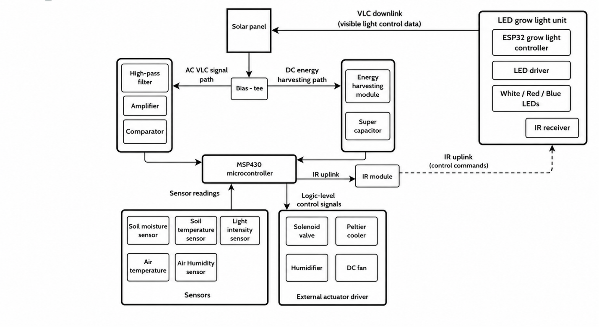
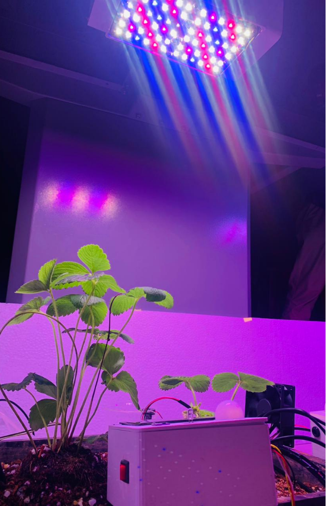
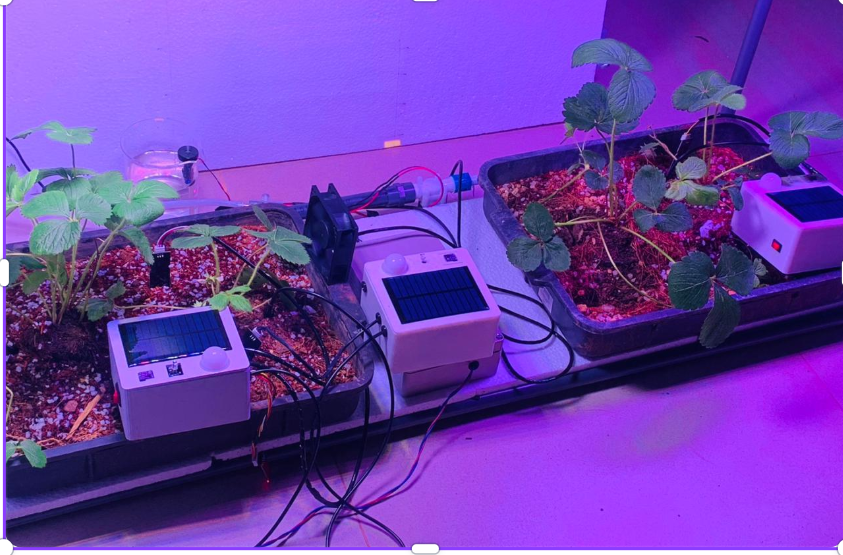
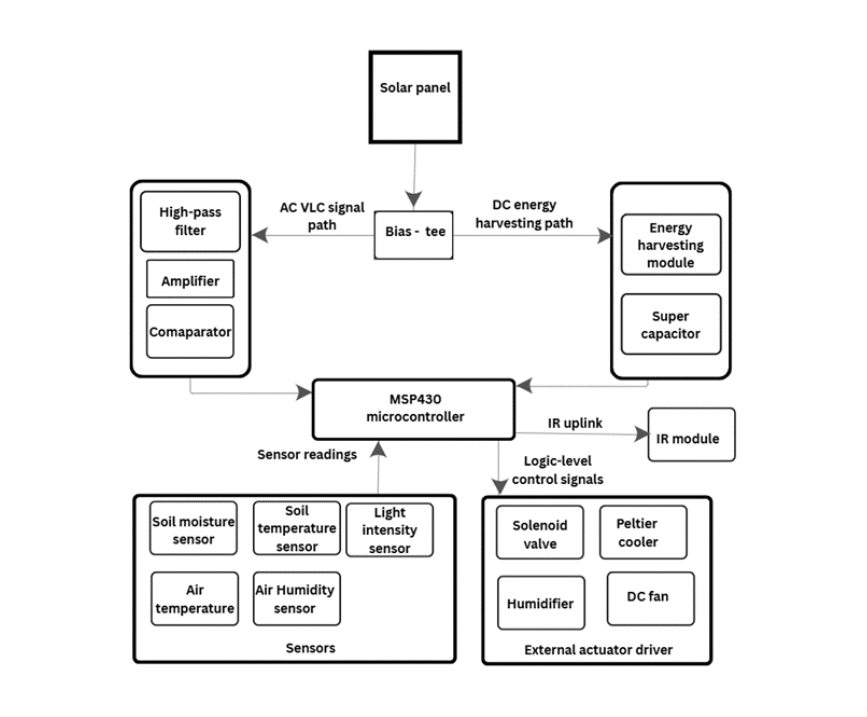
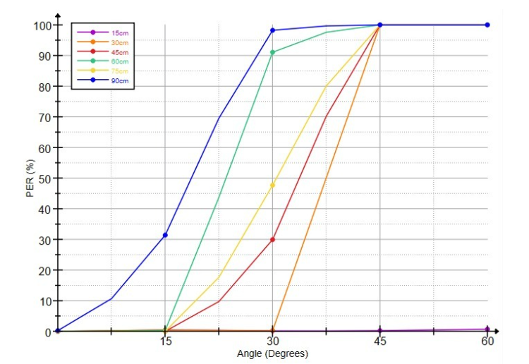

Final-Year Research Project
Team: 3 Members
VLC-Based Passive-Powered Sensing and Control Module for Indoor Farming
My Role: Communication & VLC System — Member 3
Project Overview
The project develops a passive-powered sensing and control module for indoor farming. The system is designed to harvest energy from indoor grow lights, store the harvested energy, monitor environmental conditions, and communicate data without using Wi-Fi, Bluetooth, ZigBee, or other RF communication.
Key Project Constraints
- No Wired Power Operates strictly on harvested light energy with supercapacitor storage.
- No RF Communication No Wi-Fi, Bluetooth, ZigBee, or other RF communication methods used.
- Voltage Cap Maximum system operating voltage restricted to 3.3 V.
- Range Requirement Target communication range of approximately 5–7 m.
Technologies & Hardware Components
My Contributions
- Worked on the communication and Visible Light Communication (VLC) system.
- Worked with and programmed the MSP430 microcontroller.
- Designed and tested the communication approach.
- Worked on developing and structuring the communication frame.
- Integrated and tested environmental sensors.
- Worked on IR communication implementation and evaluation.
- Performed hardware testing, troubleshooting, and electrical verification.
- Contributed to overall hardware prototype development and integration.
Project Demonstration
Project Gallery & System Diagrams





Technical Documentation
Full final-year research thesis covering system design, optical communication architecture, hardware circuits, and experimental validation.